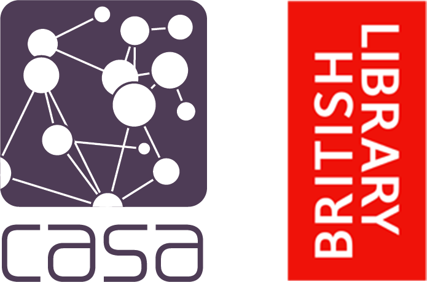

Jennie /  @JenniexWilliams /
@JenniexWilliams /  jenniewilliams
jenniewilliams
Jon / @jreades / jreades
Acknowledgements
We’d like to thank the British Library (particularly the EThOS team) and Programming Historian/Jisc for their support, guidance, and encouragement. We gratefully acknowledge the contribution of the ESRC via the LISS and UBEL DTPs to making Jennie’s research possible.
References
Andrews, D., L. Broad, P. Edwards, D. Fox, T. Gallagher, S. Garland, R. Kidd, and J. Sweeney. 2016. “The Creation and Characterisation of a National Compound Collection: The Royal Society of Chemistry Pilot.” Chem. Sci. 7. The Royal Society of Chemistry:3869–78. https://doi.org/10.1039/C6SC00264A.
Firth, J. R. 1957. “A Synopsis of Linguistic Theory, 1930-1955.” Studies in Linguistic Analysis. Basil Blackwell.
Howe, K. 2015. “A Novel Use of PhD Data: Investigating the State of the Dementia Workforce.” 2015. https://blogs.bl.uk/science/2015/09/a-novel-use-of-phd-data.html.
Montgomery, C. 2019. “Surfacing ‘Southern’ Perspectives on Student Engagement with Internationalization: Doctoral Theses as Alternative Forms of Knowledge.” Journal of Studies in International Education 23 (1):123–38. https://doi.org/10.1177/1028315318803743.
Tshitoyan, V., J. Dagdelen, L. Weston, A. Dunn, Z. Rong, O. Kononova, K. A. Persson, C. Gerbrand, and J. Anubhav. 2019. “Unsupervised Word Embeddings Capture Latent Knowledge from Materials Science Literature.” Nature 571 (July):95–98. https://doi.org/10.1038/s41586-019-1335-8.